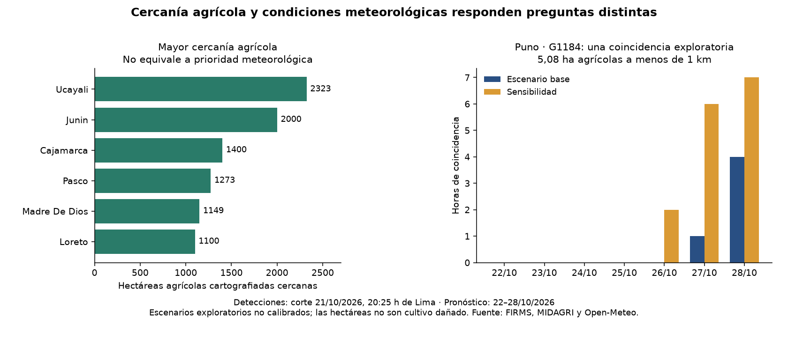

01 / ANÁLISIS ESPACIAL
Incendios y agricultura en Perú
¿Dónde coinciden las detecciones satelitales, la cercanía a cultivos y las condiciones meteorológicas del escenario base?
106 de 131 agrupaciones estaban a menos de 1 km de superficie agrícola. Una agrupación en Puno cumplió los criterios del escenario base. Es un análisis exploratorio.